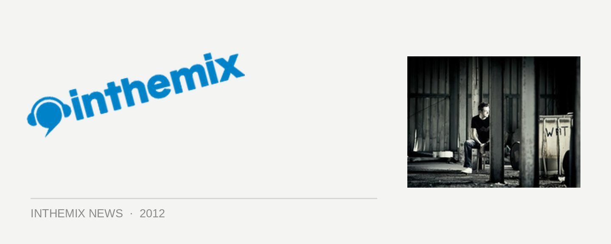

Andy Moor: "Pure trance fans have suffered lately"
UK’s Andy Moor has been pushing the boundaries of the trance genre for over a decade now, and he’s finally released his debut album Zero Point One on Armada Records, painting a dense sonic landscape across 18 tracks that carries a decidedly progressive vibe. Interestingly enough then, in the latest issue of the DJ Mag he’s put forward the case for what he labels the “pure trance fans”, who’ve been feeling aggrieved by the spell their beloved genre has increasingly fallen under from progressive, techno and most significantly house, over the past 12 months.
“It would be nice to hear a little bit more thought, soul, melody and emotion in these tracks, because I think these people deserve it,” Moor told DJ Mag. Moor conceded it’s been the more progressive, groove-driven material that’s been making waves recently, a trend he’s had no small part in helping steer in his own production work.
“Yeah, these records are working extremely well in DJ sets. It’s difficult to see what other direction it could have gone in, because it couldn’t really have gone any faster in terms of tempo. I think a lot of DJs are realising that if you bring the tempo down a little bit, you’re gonna make a lot more people happy, especially in a nightclub environment.”
Noetheless, there’s a divide that has developed; “This rocking club sound does work,” Moor says. “It works with a vaster audience and it can connect with more people at the same time, whereas the more traditional, emotional trance connects purely with the trance fans. And I think those trance fans have been left to suffer a little lately; a lot of the producers who were making good trance are now making good progressive trance, which is working for the clubs, probably more than it’s working for your emotions and feelings.”
Moor claims that balancing the need for tradition, with a sense of adventure, is one of of the hardest things to do. “To try and fulfill certain criteria; to try and combine some unique and different sounds, while still keeping it grounded in some of the genre’s conventions, but also keeping the groove…Trying to fit all of those into the one track is hard enough in itself, and to get them all working together on an album was one of the hardest things.”